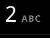
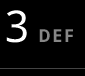

# This script was written against a Gingerbread (2.3.7) emulator # to run this script against a physical device, ensure that you have # connected an mdpi, AOSP-based device, such as the Nexus One or a Gingerbread powered Nexus S from sikuli.Sikuli import * import seemonkey device = seemonkey.getDevice() device.wake() # define a dictionary of UI resources dialerKeys = {'1':, '2':, '3':, '4':, '5':, '6':, '7':, '8':, '9':, '0':, 'send':, 'end': } # Unlock the device if the lockscreen is visible if device.exists(): device.dragDrop(,Pattern().targetOffset(321,0)) # go to the home screen device.press('home') # launch the dialer device.click() device.sleep(2) # wait for the ui to settle down again # dial and send for digit in '5035551236': device.click(dialerKeys[digit]) device.click(dialerKeys['send']) # waitfo r the end call button to appear, then click it device.wait(dialerKeys['end']) # will throw an exception if not found device.click(dialerKeys['end']) device.press('back') # due to a bug in the Sikuli interpereter, you must explicitly quit a script with the following command: exit(0)